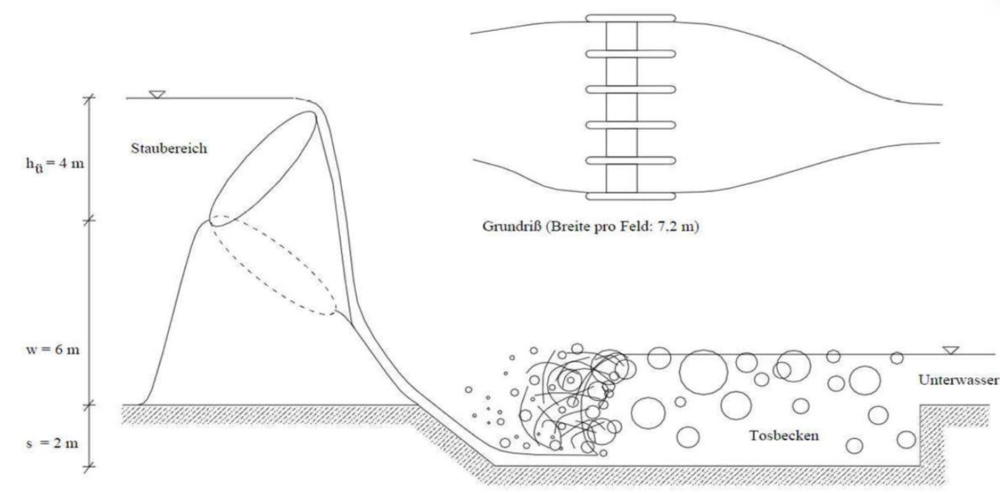
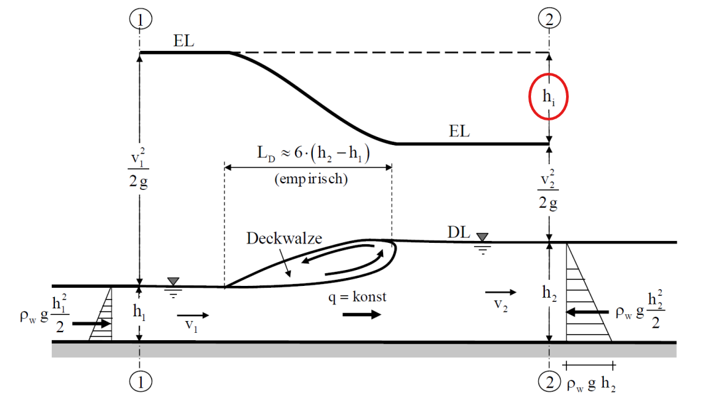
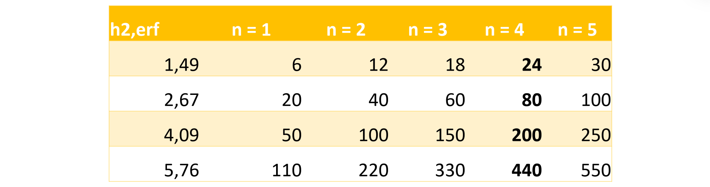

Wasserbau 4, Uebung 02#
Aufgabe 1 – Interaktiver Wehrbedienungsplan#
Dieses interaktive Notebook erlaubt es, Parameter für eine Wehranlage selbst zu variieren und die Auswirkungen auf hydraulische Kenngrößen zu untersuchen.
Für eine geplante Wehranlage soll Ihr Ingenieurbüro die erforderlichen Berechnungen durchführen und den Wehrbedienungsplan erstellen. Folgende Werte wurden bestimmt: Das Wehr wird mit 5 Fischbauchklappen mit einer Breite von je 7,2 m und einem Verlustbeiwert von 𝜇 = 0,65 ausgebildet. Die Stauhöhe beträgt 10 m. Die Wehrhöhe ist auf 6 m festgelegt. Die Sohleintiefung beträgt 𝑠 = 2 m. Die Abflusskurve ist in der Excel-Tabelle (Anlage gegeben). Setzen Sie Verluste mit \(ℎ_𝑣\) = 0,2 ℎ′ an.

Bernoulli-Energiegleichung#
Die Bernoulli-Gleichung beschreibt die Energieerhaltung in einer idealen, reibungsfreien Strömung. Sie lautet:
Bedeutung der Terme:#
\( \frac{p}{\rho g} \) ist der Druckhöhenanteil.
\( \frac{v^2}{2g} \) ist der Geschwindigkeits- oder dynamische Höhenanteil.
\( \ z_2 \) ist der geodätische Höhenanteil.
\( \ h_v \) ist die Verlusthöhe
Diese Gleichung beschreibt die Energieerhaltung entlang eines Stromfadens und setzt voraus, dass keine äußeren Kräfte oder Reibungsverluste wirken.

Der ebene freie Wechselsprung#
Durch die Anwendung des Impulssatzes an den Kontrollschnitten 1-1 und 2-2 kann die Gleichung der konjugierten Wassertiefen beim Wechselsprung hergeleitet werden
Durch die zusätzliche Anwendung der Bernoulli-Gleichung kann die Verlusthöhe im Wechselsprung wie folgt berechnet werden:

Aufgabe 1#
→ Es wurden bereits für drei in der Tabelle angegebene Abflüsse die erforderlichen Unterwassertiefen bei Ableitung über jeweils 4 Klappen bestimmt:
a) Berechnen Sie die noch fehlenden Werte und zeichnen Sie den Wehrbedienungsplan
b) Ist die Tiefe des Tosbeckens ausreichend bemessen?
c) Über wie viele Klappen muss ein Abfluss von 𝑄 = 30 m³/s abgeführt werden?
Gegeben:#
n = 5 𝑏 = 7,2 m 𝜇 = 0,65 \(h_o\) = 10 m 𝑤 = 6 m 𝑠 = 2 m \(ℎ_𝑣\) = 0,2 ⋅ ℎ′
Berechnung von \(h_{2,\text{erf}}\):#
→ Mindestwassertiefe des Unterwassers, damit das Bauwerk keinen Schaden nimmt
import ipywidgets as widgets
from ipywidgets import interact
from IPython.display import display
# Interaktive Eingabe der Parameter
mu_widget = widgets.FloatSlider(value=0.65, min=0.4, max=1.0, step=0.01, description='μ:')
n_widget = widgets.IntSlider(value=4, min=1, max=5, step=1, description='Klappen n:')
Q_widget = widgets.FloatSlider(value=440, min=10, max=500, step=10, description='Q [m³/s]:')
h1_widget = widgets.FloatSlider(value=1.19, min=1.0, max=2.0, step=0.005, description='h1 [m]:')
# Konstanten
b_klappe = 7.2 # Breite pro Klappe [m]
g = 9.81 # Erdbeschleunigung [m/s²]
#display(mu_widget, n_widget, Q_widget, h1_widget)
def berechne_interaktiv(mu, n, Q, h1):
A = b_klappe * n
v1 = Q / (A * h1)
Fr = v1 / (g * h1)**0.5
h2_erf = (h1 / 2) * ((8 * Fr**2 + 1)**0.5 - 1)
print(f"Froude-Zahl Fr = {Fr:.2f}")
print(f"Erforderliche Tiefe h2_erf = {h2_erf:.2f} m")
interact(berechne_interaktiv, mu=mu_widget, n=n_widget, Q=Q_widget, h1=h1_widget)
<function __main__.berechne_interaktiv(mu, n, Q, h1)>
✍ Aufgabe:#
Variieren Sie den Abfluss Q und beobachten Sie, wie sich die erforderliche Wassertiefe h2_erf verändert.
Was passiert bei hoher Froude-Zahl?
Wie verändert sich der Wehrbedienungsplan bei geringer Klappenzahl?

import pandas as pd
import plotly.express as px
import ipywidgets as widgets
from IPython.display import display
# Gegebene Daten für h2_erf und Abfluss bei verschiedenen Klappenanzahlen
data = {
"h2_erf [m]": [1.49, 2.67, 4.09, 5.76],
"n=1": [6, 20, 50, 110],
"n=2": [12, 40, 100, 220],
"n=3": [18, 60, 150, 330],
"n=4": [24, 80, 200, 440],
"n=5": [30, 100, 250, 550],
}
# Erstellen eines Pandas DataFrames aus dem Dictionary
df = pd.DataFrame(data)
# Funktion zum Anzeigen des Diagramms
def zeige_diagramm():
# Erstellen einer Liste aller Spalten für die Klappenanzahlen
spalten = [f"n={n}" for n in range(1, 6)]
# Erstellen des Diagramms mit Plotly Express
fig = px.line(df, y="h2_erf [m]", x=spalten,
title="Wehrbedienungsplan (Alle Klappen)",
labels={"h2_erf [m]": "h2_erf [m]", "value": "Abfluss Q [m³/s]", "variable": "Klappenanzahl"},
markers=True,
range_x=[0, 550],
range_y=[0, 6])
# Anpassen des Layouts des Diagramms
fig.update_layout(
yaxis_title="h2_erf [m]",
xaxis_title="Abfluss Q [m³/s]",
yaxis_range=[0, 6],
xaxis_range=[0, 550],
yaxis_gridcolor='lightgrey',
xaxis_gridcolor='lightgrey',
plot_bgcolor='white'
)
# Anzeigen des Diagramms
fig.show()
# Anzeigen des Diagramms (ohne interaktives Widget)
zeige_diagramm()
---------------------------------------------------------------------------
ModuleNotFoundError Traceback (most recent call last)
Cell In[2], line 2
1 import pandas as pd
----> 2 import plotly.express as px
3 import ipywidgets as widgets
4 from IPython.display import display
ModuleNotFoundError: No module named 'plotly'
Plotly-Diagramme sind ein wertvolles Werkzeug, um hydraulische Daten interaktiv zu erkunden. Anders als statische Grafiken ermöglichen sie es, durch einfaches Hovern mit der Maus präzise Werte an einzelnen Datenpunkten abzulesen. Für Detailanalysen könnt ihr in bestimmte Bereiche zoomen oder das Diagramm verschieben. Ein wesentliches Feature ist die interaktive Legende: Einzelne Datensätze lassen sich durch einen Klick gezielt ein- oder ausblenden. Der Doppelklick auf einen Eintrag in der Legende isoliert diesen Datensatz, was den Vergleich mit anderen Datensätzen vereinfacht.
Im nächsten Schritt muss \(h_u\) bestimmt werden. Dies kann aus der Abflusskurve abgelesen werden. Markiere die entsprechenden Punkte für \(h_u\) im nächsten Diagramm!
import pandas as pd
import plotly.express as px
import dash
from dash import dcc, html, Input, Output
# Daten definieren
abflusskurve_data = {
"Q": [0, 20, 24, 40, 60, 80, 100, 120, 140, 160, 180, 200, 220, 240, 260, 280, 300, 320, 340, 360, 380, 400, 420, 440],
"hu": [0, 0.6, 0.66, 0.9, 1.15, 1.37, 1.59, 1.78, 1.97, 2.13, 2.3, 2.45, 2.6, 2.75, 2.89, 3.02, 3.15, 3.28, 3.4, 3.52, 3.64, 3.76, 3.82, 3.9]
}
df_abflusskurve = pd.DataFrame(abflusskurve_data)
richtige_punkte = [(24, 0.66), (80, 1.37), (200, 2.45), (440, 3.9)]
toleranz_Q = 10
toleranz_hu = 0.1
# Dash-App erstellen
app = dash.Dash(__name__)
app.layout = html.Div([
dcc.Graph(id='abfluss-plot', config={'displayModeBar': False}),
html.Div(id='rueckmeldung', style={'font-weight': 'bold', 'font-size': '18px', 'margin-top': '10px'}),
html.Div(id='korrekte-punkte', style={'margin-top': '10px'}),
html.Div(id='erfolg-nachricht', style={'font-weight': 'bold', 'font-size': '20px', 'color': 'green', 'margin-top': '20px'})
])
korrekt_ausgewaehlt = []
@app.callback(
[Output('abfluss-plot', 'figure'),
Output('rueckmeldung', 'children'),
Output('korrekte-punkte', 'children'),
Output('erfolg-nachricht', 'children')],
Input('abfluss-plot', 'clickData')
)
def update_plot(clickData):
global korrekt_ausgewaehlt
fig = px.line(df_abflusskurve, x='Q', y='hu', title="Finde die richtigen Punkte!",
labels={'Q': 'Abfluss Q [m³/s]', 'hu': 'hu [m]'}, line_shape='linear')
fig.update_traces(line=dict(color='blue'))
rueckmeldung = "Klicke auf einen Punkt in der Grafik."
erfolg_nachricht = ""
if clickData:
clicked_x = clickData['points'][0]['x']
clicked_y = clickData['points'][0]['y']
richtig = any(abs(clicked_x - Q) <= toleranz_Q and abs(clicked_y - hu) <= toleranz_hu for Q, hu in richtige_punkte)
if richtig:
naechster_punkt = next((p for p in richtige_punkte if abs(clicked_x - p[0]) <= toleranz_Q and abs(clicked_y - p[1]) <= toleranz_hu), None)
if naechster_punkt and naechster_punkt not in korrekt_ausgewaehlt:
farbe = 'green'
rueckmeldung = "✅ Punkt richtig!"
korrekt_ausgewaehlt.append(naechster_punkt)
if len(korrekt_ausgewaehlt) == len(richtige_punkte):
erfolg_nachricht = "Herzlichen Glückwunsch - alle Punkte gefunden!"
else:
farbe = 'orange'
rueckmeldung = "Dieser Punkt wurde bereits ausgewählt."
else:
farbe = 'red'
rueckmeldung = "❌ Punkt falsch!"
fig.add_scatter(x=[clicked_x], y=[clicked_y], mode='markers', marker=dict(size=12, color=farbe))
# Füge alle korrekt ausgewählten Punkte hinzu
for x, y in korrekt_ausgewaehlt:
fig.add_scatter(x=[x], y=[y], mode='markers', marker=dict(size=12, color='green'))
korrekte_punkte_text = [
html.Div([
html.Span("h_u,", style={'font-size': '18px'}),
html.Span(f"{int(x)}", style={'font-size': '14px', 'vertical-align': 'sub'}),
html.Span(f" = {y:.2f}", style={'font-size': '18px'})
]) for x, y in korrekt_ausgewaehlt
]
return fig, rueckmeldung, korrekte_punkte_text if korrekte_punkte_text else "", erfolg_nachricht
if __name__ == '__main__':
app.run(debug=False)
import pandas as pd
import numpy as np
import plotly.graph_objects as go
import dash
from dash import dcc, html
# Daten für Wehrbedienungsplan
wehr_data = {
"h2_erf [m]": [1.49, 2.67, 4.09, 5.76],
"n=1": [6, 20, 50, 110],
"n=2": [12, 40, 100, 220],
"n=3": [18, 60, 150, 330],
"n=4": [24, 80, 200, 440],
"n=5": [30, 100, 250, 550],
}
df_wehr = pd.DataFrame(wehr_data)
# Daten für Abflusskurve
abflusskurve_data = {
"Q": [0, 20, 24, 40, 60, 80, 100, 120, 140, 160, 180, 200, 220, 240, 260, 280, 300, 320, 340, 360, 380, 400, 420, 440],
"hu": [0, 0.6, 0.66, 0.9, 1.15, 1.37, 1.59, 1.78, 1.97, 2.13, 2.3, 2.45, 2.6, 2.75, 2.89, 3.02, 3.15, 3.28, 3.4, 3.52, 3.64, 3.76, 3.82, 3.9]
}
df_abflusskurve = pd.DataFrame(abflusskurve_data)
# Abflusskurve + 2m berechnen
df_abflusskurve["hu+2"] = df_abflusskurve["hu"] + 2
# Funktion zum Finden der Schnittpunkte
def find_intersections(df_wehr, df_abflusskurve, tolerance=0.01):
intersections = []
for n in ["n=1", "n=2", "n=3"]:
for i in range(len(df_wehr) - 1):
x1, y1 = df_wehr[n][i], df_wehr["h2_erf [m]"][i]
x2, y2 = df_wehr[n][i+1], df_wehr["h2_erf [m]"][i+1]
for j in range(len(df_abflusskurve) - 1):
x3, y3 = df_abflusskurve["Q"][j], df_abflusskurve["hu+2"][j]
x4, y4 = df_abflusskurve["Q"][j+1], df_abflusskurve["hu+2"][j+1]
denom = (y4-y3)*(x2-x1) - (x4-x3)*(y2-y1)
if abs(denom) > 1e-8: # Vermeidung von Division durch Null
ua = ((x4-x3)*(y1-y3) - (y4-y3)*(x1-x3)) / denom
ub = ((x2-x1)*(y1-y3) - (y2-y1)*(x1-x3)) / denom
if 0 <= ua <= 1 and 0 <= ub <= 1:
x = x1 + ua * (x2-x1)
y = y1 + ua * (y2-y1)
if abs(y - (y3 + ub * (y4-y3))) < tolerance:
intersections.append({"n": n, "Q": x, "h": y})
return intersections
intersections = find_intersections(df_wehr, df_abflusskurve)
# Dash-App erstellen
app = dash.Dash(__name__)
# Graph erstellen
fig = go.Figure()
farben = ['red', 'green', 'blue', 'purple', 'orange']
for i, col in enumerate(["n=1", "n=2", "n=3", "n=4", "n=5"]):
fig.add_trace(go.Scatter(x=df_wehr[col], y=df_wehr["h2_erf [m]"], mode='lines+markers', name=col, line=dict(color=farben[i])))
fig.add_trace(go.Scatter(x=df_abflusskurve['Q'], y=df_abflusskurve['hu'], mode='lines', name='Abflusskurve', line=dict(color='darkgrey', width=2, dash='dash')))
fig.add_trace(go.Scatter(x=df_abflusskurve['Q'], y=df_abflusskurve['hu+2'], mode='lines', name='Abflusskurve +2m', line=dict(color='black', width=2, dash='dash')))
# Schnittpunkte zur Figur hinzufügen
for point in intersections:
fig.add_trace(go.Scatter(
x=[point['Q']],
y=[point['h']],
mode='markers',
marker=dict(size=15, symbol='circle-open', color='red'),
name=f"Schnittpunkt {point['n']}",
text=f"n={point['n']}, Q={point['Q']:.2f}, h={point['h']:.2f}",
hoverinfo='text'
))
# Layout-Anpassungen
fig.update_layout(
title="Wehrbedienungsplan und Abflusskurve mit Schnittpunkten",
xaxis_title="Abfluss Q [m³/s]",
yaxis_title="h2_erf [m] / hu + s [m]",
plot_bgcolor='white',
yaxis_range=[0, 6],
xaxis_range=[0, 550],
xaxis=dict(
tickmode='linear',
tick0=0,
dtick=20,
gridcolor='darkgrey',
gridwidth=1.0,
ticklen=5,
minor=dict(
tickmode='linear',
tick0=0,
dtick=5,
gridcolor='lightgrey',
gridwidth=0.5
)
),
yaxis=dict(
tickmode='linear',
tick0=0,
dtick=1,
gridcolor='darkgrey',
gridwidth=1.0,
minor=dict(
dtick=0.2,
gridcolor='lightgrey',
gridwidth=0.2
)
),
legend_title="Legende",
hovermode="closest"
)
app.layout = html.Div([
html.H1("Wehrbedienungsplan und Abflusskurve"),
dcc.Graph(id="graph", figure=fig),
html.Div(id="output-container", style={"margin": "20px", "padding": "15px", "border": "1px solid gray"})
])
if __name__ == '__main__':
app.run(debug=False)
Überfallhöhen#
Im nächsten Schritt wird die Überfallhöhe berechnet. Es gibt zwei verschiedene Überfallarten.
Vollkommener Überfall#
Der Abfluss Q wird nicht vom Unterwasser her beeinflusst
Im Bereich der Überfallkrone kommt es zum Fließwechsel Strömen → Schießen
Im Bereich der Wehrkrone herrscht der Grenzzustand (\(h_gr\))

Unvollkommener Überfall#
Der Abfluss Q kann vom Unterwasserstand beeinträchtigt bzw. vermindert werden (Abminderungsfaktor c)
Es kommt nicht zu einem Fließwechsel

import dash
from dash import dcc, html, Input, Output, State, dash_table
import pandas as pd
import math
import plotly.express as px
# Dash-App erstellen
app = dash.Dash(__name__)
# Formel zur Berechnung von Q
def berechne_Q(hu, n):
µ = 0.65
b = n * 7.2
g = 9.81
return (2 / 3) * µ * b * math.sqrt(2 * g) * (hu ** (3 / 2))
# Daten definieren
hü_values = [0, 1, 2, 3, 4]
n_values = [1, 2, 3, 4]
# Kontrollwerte aus der Tabelle
expected_values = {
(hu, n): berechne_Q(hu, n) for hu in hü_values for n in n_values
}
# Leere Tabelle erstellen
df_table = pd.DataFrame(
[[None for _ in n_values] for _ in hü_values],
columns=[f"n_{n}" for n in n_values],
index=hü_values
)
df_table.insert(0, "hü", hü_values)
# Speicherung der bisherigen Werte
previous_plot_data = []
app.layout = html.Div([
dash_table.DataTable(
id='interaktive-tabelle',
columns=[{"name": "hü", "id": "hü", "editable": False}] +
[{"name": f"n = {n}", "id": f"n_{n}", "editable": True} for n in n_values],
data=df_table.to_dict('records'),
editable=True,
style_table={'margin': '20px'},
style_cell={'textAlign': 'center', 'font-size': '16px'},
style_header={
'backgroundColor': 'rgb(220, 220, 220)',
'fontWeight': 'bold'
},
style_data_conditional=[
{
'if': {'row_index': 'odd'},
'backgroundColor': 'rgb(248, 248, 248)'
}
]
),
html.Div(id='feedback', style={'margin-top': '20px', 'font-weight': 'bold', 'font-size': '18px'}),
dcc.Graph(id='plot')
])
@app.callback(
[Output('interaktive-tabelle', 'data'), Output('feedback', 'children'), Output('plot', 'figure')],
Input('interaktive-tabelle', 'data'),
State('interaktive-tabelle', 'data_previous')
)
def validate_table(data, data_previous):
global previous_plot_data
if data_previous is None:
return data, "", px.line()
feedback_messages = []
new_plot_data = []
for row in data:
hu_value = row['hü']
for n in n_values:
col_name = f"n_{n}"
cell_value = row[col_name]
if cell_value is not None:
try:
cell_value_float = float(cell_value)
expected_value = expected_values.get((hu_value, n), None)
if expected_value is not None and math.isclose(cell_value_float, expected_value, rel_tol=1e-2):
row[col_name] = f"{cell_value_float} ✅"
new_plot_data.append((cell_value_float, hu_value, f"n={n}"))
else:
row[col_name] = f"{cell_value_float} ❌"
except ValueError:
continue
# Kombiniere alte und neue Werte
previous_plot_data.extend(new_plot_data)
df_plot = pd.DataFrame(previous_plot_data, columns=['Q', 'hü', 'n'])
fig = px.line(df_plot, x='Q', y='hü', color='n', title="Visualisierung der berechneten Q-Werte", markers=True)
fig.update_layout(yaxis=dict(range=[0, max(hü_values)]), xaxis=dict(range=[0, max(expected_values.values())]))
return data, "\n".join(feedback_messages), fig
if __name__ == '__main__':
app.run(debug=False)